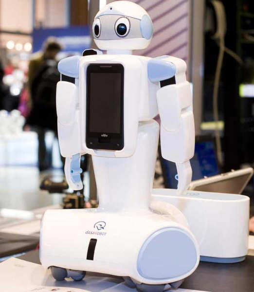

¿Que es la robotica?
La robótica es una rama de la ingeniería que se dedica al diseño, construcción y programación de robots. Los robots son máquinas capaces de realizar tareas de manera autónoma o semiautónoma, sin necesidad de intervención humana directa. La historia de la robótica se remonta a la antigua Grecia, donde se crearon los primeros autómatas, que eran figuras mecánicas que se movían solas. A lo largo de los siglos, la robótica ha evolucionado gracias a la tecnología, y ha permitido la creación de robots cada vez más avanzados y útiles. En la actualidad, la robótica tiene muchas aplicaciones en diferentes campos, como la medicina, la exploración espacial, la industria manufacturera, la agricultura y la seguridad. Algunos ejemplos de robots utilizados en estas áreas incluyen robots quirúrgicos, rovers espaciales, robots de ensamblaje de fábricas, drones agrícolas y robots de vigilancia. La robótica también tiene aplicaciones en el ámbito educativo, con la creación de kits de robótica y programas educativos para enseñar a niños y jóvenes sobre robótica y programación.
Evolucion de la robotica
La palabra robot proviene del vocablo checo robota, que significa literalmente “esclavo”. Fue puesto en circulación por el escritor checo Karel Capek (1890-1938) con su novela R.U.R. (Robots Universales Rossum) de 1920. Igualmente, la palabra robótica, entendida como disciplina, fue acuñada por Isaac Asimov (1920-1992). Este escritor de Ciencia Ficción fue uno de los más célebres cultores del futuro imaginario robotizado. Sin embargo, los antecedentes de la robótica pueden rastrearse mucho antes, en el deseo del ser humano de construir seres a su imagen y semejanza, que pudieran relevarlo de los trabajos tediosos. Ya en el siglo III a. C. el escritor chino Lie Yukou escribió el Lie Zi, relato donde a un rey chino le era presentada una figura humana mecánica. En los textos Pneumática y Automata de Herón de Alejandría, en el siglo I a. C., ya aparecían las ideas de máquinas y autómatas capaces de hacer lo que el ser humano no. Los primeros robots reales aparecieron entre 1950 y 1960. Se dedicaban a labores industriales simples, mecánicas y automatizadas. En 1971 se utilizó el primer robot dedicado a la exploración espacial. Fue puesto en la superficie marciana por el proyecto espacial de la extinta Unión Soviética, Se perdió contacto con él tan sólo unos segundos después del aterrizaje. Los estadounidenses imitaron este gesto en 1976 con el Viking I de NASA, demostrando así el enorme potencial de los robots en la exploración espacial y en otros ambientes extremos, como el fondo marino. Incluso se intentó emplear robots en la remoción de los escombros del reactor destruido en Chernóbil, en 1986, pero la radiación freía los circuitos a los pocos segundos de uso. El primer robot humanoide y bípedo, el ASIMO, fue anunciado en Japón en 2011, y se hicieron demostraciones de su capacidad de interacción con humanos. Los adelantos en inteligencia artificial permitieron que en 2015 apareciera también Sophia, un robot ginoide con apariencia humana realista, diseñado para adaptarse al entorno social con humanos y ser capaz de recordar, reconocer caras y simular expresiones faciales.

¿Qué cosas combina la robotica?
La robótica es una disciplina que combina diferentes áreas del conocimiento, como la ingeniería mecánica, la electrónica, la informática y la inteligencia artificial, entre otras. Esta disciplina se ha desarrollado rápidamente en las últimas décadas gracias a la innovación tecnológica y a la demanda de soluciones automatizadas en diferentes ámbitos. Entre las aplicaciones modernas de la robótica se encuentran la producción industrial, la medicina, la exploración espacial, la agricultura, la defensa y seguridad, y la educación. Los robots se han convertido en herramientas cada vez más importantes para mejorar la eficiencia, la precisión y la seguridad en una amplia variedad de tareas. Además, la robótica es una disciplina que está en constante evolución y se espera que en el futuro se desarrollen robots cada vez más avanzados y versátiles. Por ejemplo, se espera que los robots autónomos puedan realizar tareas cada vez más complejas, como la toma de decisiones en tiempo real y la adaptación a diferentes situaciones. En resumen, la robótica es una disciplina fascinante que combina tecnología, ciencia y creatividad para desarrollar soluciones automatizadas que pueden mejorar la vida de las personas en muchos aspectos.